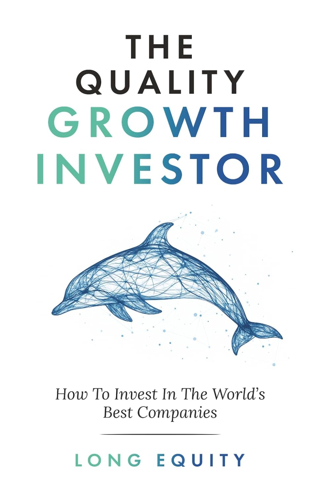

《优质成长投资者》与本书架上其他几本不同：它不是某位知名基金经理的著作，而是一本以"Long Equity"为笔名、通过亚马逊自助出版的书，背后是一家名为longeq.com的独立股票数据研究平台，真实作者身份并未公开。这本书还有若干换名重出的版本——如《2024 Edition：优质成长投资终极攻略》《The Intelligent Quality Growth Investor》——内容大体相同，均为亚马逊KDP自出版、只有ASIN而无正式ISBN，也没有传统出版社背书或可考的销量数据，其"畅销"与高评分均属自述。把它放进来，不是因为它有权威身份，而是因为它把"优质成长"这套投资框架压缩成了一份足够清晰的操作手册。
这套框架用四条标准定义一家"优质成长"公司：其一，营收与自由现金流同步增长，而非只有漂亮的收入、却换不回现金；其二，拥有远高于资本成本的资本回报率，能把利润持续地以高回报再投资；其三，具备抵御竞争与周期的护城河和定价权；其四，身处真正在扩张的终端市场。据此它刻意回避强周期行业和可选消费品，偏爱那些"为大量其他企业提供必需服务、既能创造价值又能定价"的公司。
在流程上，它描述的是一条漏斗：先用量化标准筛过全球两千多家公司，再把其中约两三百家排进自建数据库打分，对排名靠前的深入研究，最后只持有10到12只股票的集中组合。这套"宽筛选、窄持有"的做法，与特里·史密斯的Fundsmith、以及巴菲特"以合理价格买入优秀公司"的思路同属"质量投资"（quality investing）一脉，只是把它落成了一份数据驱动、可照着执行的清单。
正因为作者匿名、无从核实其长期业绩，这本书更适合被当作一份检查清单而非投资权威来读——它的价值在框架而不在身份。对已经熟悉质量投资理念的读者，它是一次紧凑的复述；对刚接触这一流派的人，四条标准和那条筛选漏斗提供了一个可以马上拿去套用的起点。诚实地说，它的分量远不及达摩达兰或麦肯锡那几本厚书，但作为一份把"什么算好公司"讲得干脆利落的小册子，它自有其用处。